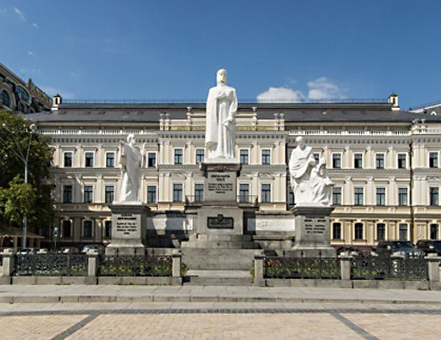

St. Sofia Cathedral

Monument to princess Olga
Monument to princess Olga on MihaylС–vska Ploshcha in Kyiv is sculptural composition, that form of monument to great princess in centre, two pedestals of enlighteners of slavonik nations- Kiril and Mefodiy, thats stay right and statue of apostle Andriy, that stay left.
Building started in Augest 1909. This monument opened in 4 September 1911. It was project of remerkable sculptor Kavaleridze, Balavenskiy, Snytkin and Rykov. Monument staied a little time, because in 1919 it destroied. On this place planted flower-bed.
In 1996 sculptors Vitaly Sivko, Mikola Bilyk and Vitaliy Shishiv restored monument.
Address: Kyiv , MihaylС–vska Ploshch.